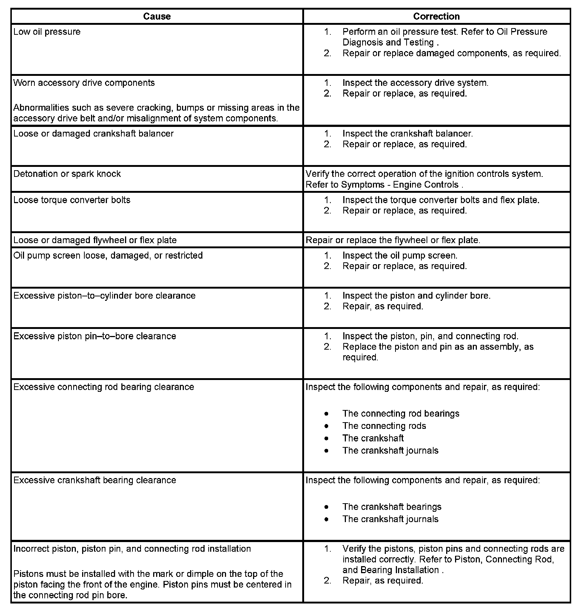

Operation CHARM
: Car repair manuals for everyone.
Home
>>
Cadillac
>>
2007
>>
Escalade ESV AWD V8-6.2L
>>
Repair and Diagnosis
>>
Engine, Cooling and Exhaust
>>
Engine
>>
Testing and Inspection
>>
Symptom Related Diagnostic Procedures
>>
Lower Engine Noise, Regardless of Engine Speed
Lower Engine Noise, Regardless of Engine Speed
Lower Engine Noise, Regardless of Engine Speed
Lower Engine Noise, Regardless of Engine Speed:
